قاموس رموز LuxDot
مجموعة الرموز الملونة المختارة. المعنى يظهر في الواجهة عند hover/focus؛ الرمز لا يُرقّى إلى SLS لمجرد استخدامه في الواجهة.
التلفزيون
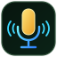
الراديو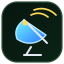
الإشارة / المرصدالمكتبة
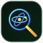
الأبحاث العلمية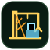
مشاريع البناء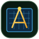
الهندسة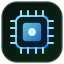
الذاكرة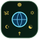
الأديان / التقاليد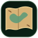
الأطلس / الخرائط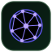
شبكات المعرفةالبحث والتقصي
الرزنامة / الوقت
الكتاب الحي
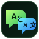
اللغة والتواصل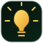
الإبداع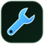
التصحيح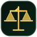
الاعتراض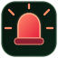
التبليغ عن مشكلة